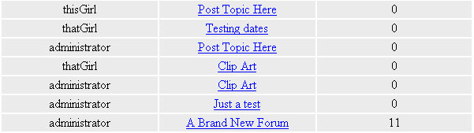
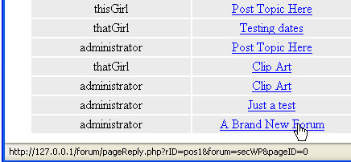

The Forum Posts Tables
This lesson is part of an ongoing Foruml tutorial. The first part is here: Build your own Forum, along with all the files you need. The previous lesson is here.
There are 5 Post tables in the database, one for each section of the forum. Here's what each Post table is called, and what they are for:
wpposts - All posts to do with Microsoft
Word
vbposts - All posts to do with Visual Basic .NET
xlposts - - All posts to do with Microsoft Excel
wdposts - All posts to do with Web Design
phposts - All posts to do with PHP
Since all of these tables have the same structure, we'll just take a look at the wpposts table. Click on this table in phpMyAdmin, then click the Browse button. You should see the following:
The wpposts table (Opens in a new window 47K).
There are five fields in each of the post tables: threadID, memberID, threadTopic, postText, and datePosted. Here's what they all do:
threadID - used to identify an individual
post (the primary key)
memberID - used to identify which member posted this topic
threadTopic - the text used in the hyperlink when viewing the topics
page
postText - the text for the Post
datePosted - the date the memebr Posted the topic
We'll access these post tables when a user clicks on a particular forum
section on the main page. When they do, this is what the user sees in
the browser:

If you hold your mouse over a link, you'll see this in the status bar:

The thing to notice about the link is rID=pos1. The pos1 is coming from the table, and is the threadID field. Hold your mouse over a different link and you'll see the pos1 change. When the link is clicked, we'll be pulling information from the reply table. The reply table will also have a threadID field. We'll only be displaying records where the threadID fields match.
The final five tables in the database are for the replies. We'll see them next.